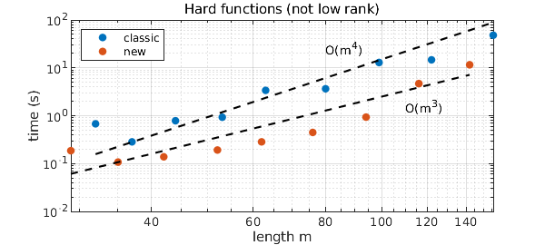
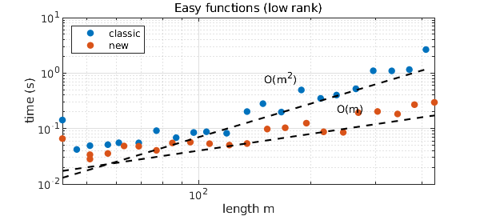

1. The new Chebfun3 constructor
Chebfun3 was introduced by Behnam Hashemi in 2016 [2] and has been computing with functions $f(x,y,z)$ ever since. More recently Christoph Strössner, in his PhD work at EPFL in Lausanne with Sergey Dolgov and Daniel Kressner, found a way to speed up the Chebfun3 constructor by switching from a slice-Tucker representation to an algorithm that identifies fibers in each of the three directions more directly [1]. As of March 2023, this is now the default; the original Chebfun3 constructor can be accessed with the flag 'classic'.
In this example we we illustrate the improved speed of the new constructor. Following [3], we look first at a hard example (not low-rank) and then at an easy one (low-rank). Of course, many other functions could be investigated.
2. Hard functions (not low rank)
The function $$ f(x,y,z) = \tanh(k(x+y+z)) $$ is not of low rank [4], and it makes Chebfun3 work hard for larger values of $k$. Our first figure shows that the new constructor appears to improve the complexity from about $O(m^4)$ to about $O(m^3)$, where $m$ is the length of the chebfun3.
MS = 'markersize'; FS = 'fontsize'; ms = 16; LO = 'location'; NW = 'northwest';
kk = 2.^(0:(1/3):2.7);
t1 = []; t2 = []; m1 = []; m2 = [];
for k = kk
ff = @(x,y,z) tanh(k*(x+y+z));
tic, f1 = chebfun3(ff,'classic'); t1 = [t1 toc]; m1 = [m1 length(f1)];
tic, f2 = chebfun3(ff); t2 = [t2 toc]; m2 = [m2 length(f2)];
end
loglog(m1,t1,'.',MS,ms), hold on, loglog(m2,t2,'.',MS,ms)
loglog(m1,1.5e-7*m1.^4,'--k'), text(80,25,'O(m^4)')
loglog(m2,2.5e-6*m2.^3,'--k'), text(110,1.5,'O(m^3)')
xlabel('length m'), ylabel('time (s)')
legend('classic','new',LO,NW), grid on, hold off
title('Hard functions (not low rank)')

3. Easy functions (low rank)
Next we try the 3D Runge function $$ f(x,y,z) = {1\over 1 + k(x^2+y^2+z^2)}. $$ Chebfun3 shows a complexity of about $O(m^2)$ while the new constructor looks more like $O(m)$.
kk = 2.^(0:(1/3):7);
t1 = []; t2 = []; m1 = []; m2 = [];
for k = kk
ff = @(x,y,z) 1./(1+k*(x.^2+y.^2+z.^2));
tic, f1 = chebfun3(ff,'classic'); t1 = [t1 toc]; m1 = [m1 length(f1)];
tic, f2 = chebfun3(ff); t2 = [t2 toc]; m2 = [m2 length(f2)];
end
loglog(m1,t1,'.',MS,ms), hold on, loglog(m2,t2,'.',MS,ms)
loglog(m1,0.7e-5*m1.^2,'--k'), text(150,0.8,'O(m^2)')
loglog(m2,4e-4*m2,'--k'), text(235,0.22,'O(m)')
xlabel('length m'), ylabel('time (s)')
legend('classic','new',LO,NW), grid on, hold off
title('Easy functions (low rank)')

4. Sometimes it goes the other way
The new constructor is not always faster than the classic one, which was particularly strong in cases where one pair of variables could be effectively separated from the third. For example,
ff = @(x,y,z) tanh(10*(x+y)).*cos(z); tic, f = chebfun3(ff); toc tic, f = chebfun3(ff,'classic'); toc
Elapsed time is 1.150786 seconds. Elapsed time is 0.442261 seconds.
References
[1] S. Dolgov, D. Kressner, and C. Strössner, Functional Tucker approximation using Chebyshev interpolation, SIAM J. Sci. Comput. 43 (2021), A2190--A2210.
[2] B. Hashemi and L. N. Trefethen, Chebfun in three dimensions, SIAM J. Sci. Comput. 39 (2017), C341--C363.
[3] L. N. Trefethen, Chebfun timings for tough 1D/2D/3D functions, Chebfun Example, April 2015.
[4] L. N. Trefethen, Cubature, approximation, and isotropy in the hypercube, SIAM Review 59 (2017), 469--491.